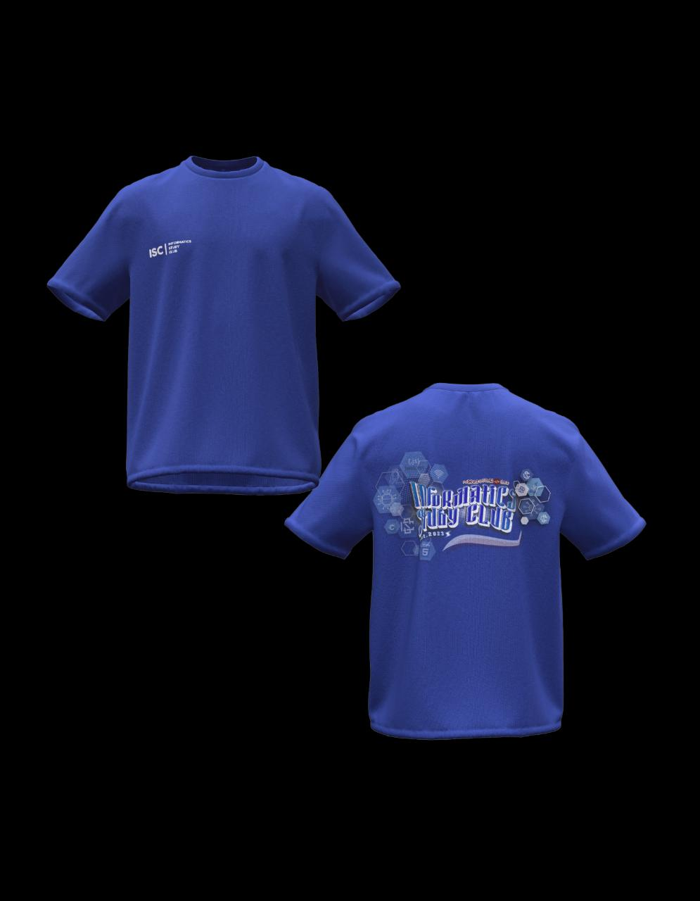
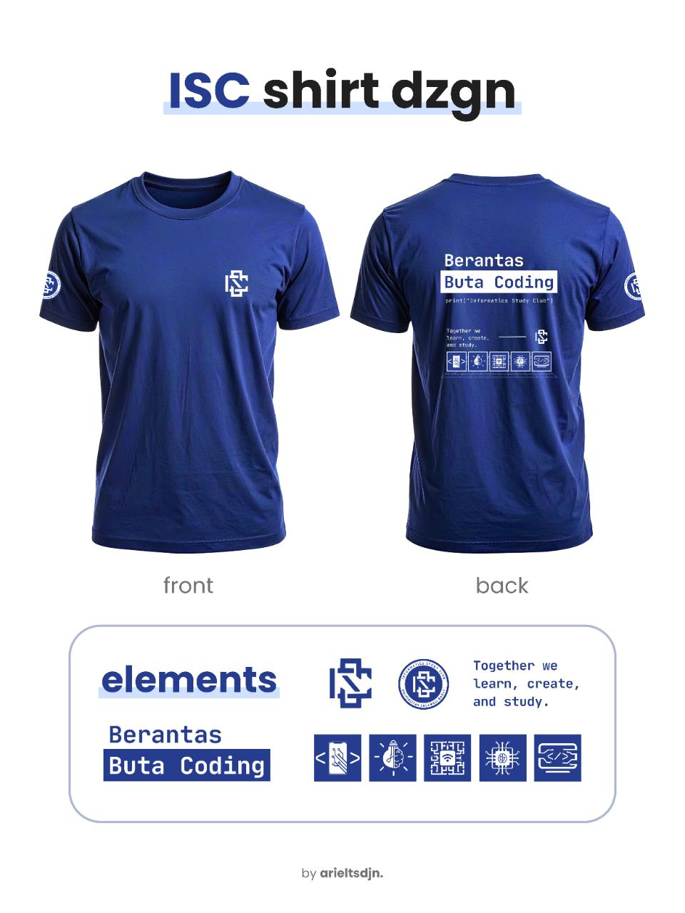

PENGUMUMAN PEMENANG
Sayembara Desain Kaos ISC
Terima kasih kepada seluruh peserta yang telah berpartisipasi dan menuangkan ide-ide kreatifnya. Berikut adalah 2 desain memukau yang terpilih!
Terima kasih kepada seluruh peserta yang telah berpartisipasi dan menuangkan ide-ide kreatifnya. Berikut adalah 2 desain memukau yang terpilih!

Konsep Utama: Desain ini mengangkat konsep keterhubungan dan identitas sebagai seorang coder. Elemen hexagon pada latar melambangkan struktur kompleks dan saling terhubung, terinspirasi dari bentuk sarang lebah. Setiap hexagon merepresentasikan node dalam jaringan, dimana tiap elemen berisi simbol-simbol dunia informatika seperti bahasa, jaringan, dan khususnya logo ISC sendiri. Bermaksud bahwa dalam dunia IT, setiap bagian memiliki peran dan membentuk satu sistem yang kuat.
Identitas: Diperkuat pada bagian identitas, digunakan kata “MaroonCoder” yang merepresentasikan anggota ISC adalah mahasiswa Informatika Universitas Sulawesi Barat sebagai bagian dari "Marooners" yang akan menuliskan kode untuk membuat situs web, aplikasi, dll. Huruf “O” diganti dengan simbol </> (Code), yang menggambarkan inti dari aktivitas seorang programmer.
Tipografi: Tulisan utama “Informatics Study Club” dibuat dengan gaya font yang lebih fun dan tidak kaku, menunjukkan bahwa komunitas ini bukan hanya tempat belajar formal, tetapi juga ruang berkembang, berkolaborasi, dan membangun relasi pertemanan.

Makna Elemen: Menunjukkan identitas yang fokus pada belajar, kolaborasi, dan menciptakan solusi. Logo di dada melambangkan kebanggaan dan keterikatan anggota. Warna biru tua menunjukkan profesionalisme, kecerdasan, dan kepercayaan. Bagian belakang menegaskan misi utama yaitu "Berantas Buta Coding".
Sintaks & Ikon: Kode program print("Informatics Study Club"); menegaskan bahwa ISC ini adalah tempat untuk "menampilkan" atau mewujudkan karya-karya baru. Ikon-ikon di bawahnya melambangkan berbagai divisi dalam ISC.
Karakteristik: Semua elemen secara keseluruhan menunjukkan bahwa anggota ISC adalah pribadi yang terstruktur, fokus, dan solutif di bidang teknologi.
Gunakan tombol di bawah masing-masing desain untuk mengunduh mentahannya (vektor).